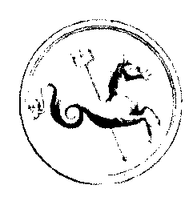

Diougan Gwenc'hlan
Derou "Diougan Gwenc'hlan" kanet gant Youenn Gwernig e 1980
Ton
(Mode hypolocrien, Arrangt Christian Souchon)
|
1.
Pa guzh an heol, pa goeñv ar mor
Me 'oar kanañ war dreuz ma dor. (2 w.) 2. Pa oan yaouank me a gane ; Pa'z on deut kozh, me gan ivez. (2 w.) 3. Me 'gan en noz, me 'gan en deiz Ha me keuziet koulskoude. (2 w.) 4. Mar d'eo ganin stouet va beg, Mar 'm euz keuz, n'eo ket heb abeg. 5. Evit aon me n'am-euz ket; 'M-euz ket aon da vout lazhet! 6. Evit aon me n'am-euz ket; Amzer awalc'h ez on-me bet! 7. Pa ne vin klasket, vin kavet, Ha pa 'z on klasket, nez'on ket. 8. Na vern petra a c'hoarvezo: Pezh a zo dleet a vezo. 9. Ret eo d'an holl mervel teir gwezh , Kent evit arzav en-diwezh. 10. Me 'wel an hoc'h 'tont dioc'h ar c'hoad, Hag eñ gwall-gamm, gwallet e droad; 11. E veg digor ha leun a wad, Hag e reun louet gant an oad; 12. Hag e voc'higoù tro-war-dro, Gant an naon bras o soc'ho . 13. Me well ar morvarc'h ' enep-tont, Ken e kren an aod gant ar spont. 14. Eñ ken gwenn evel an erc'h kann ; En e benn kernioù arc'hant. 15. An dour dindan añ o virviñ, Gant an tan- daran eus e fri; 16. Mor-gezeg en-dro de'añ ker stank Hag ar geot war lez ar stank. 17. - Dalc'hmat'ta, dalc'hmat'ta, morvarc"h! Dalc'h gant e benn! Dalc'hmat'ta, dalc'h! 18. Ken e riskl er gwad an treid noazh! Gwashoc'h-gwazh! Dalc'h-ta! Gwashoc'h-gwazh! |
19. Me 'wel ar gwad evel ur wazh!
Darc'h mat'ta! Darc'h-ta! Gwashoc'h-gwazh! 20. Me 'wel ar gwad 'hed penn e c'hlin! Me 'wel ar gwad evel ul linn! 21. Gwashoc'h-gwazh! Darc'h-ta! Gwashoc'h-gwazh! Arsaviñ a ri 'benn arc'hoazh! 22. - Darc'h mat'ta, darc'h mat'ta, morvarc'h, Darc'h gant e benn, darc'h mad'ta, darc'h! 23. Pa oan em bez yen, hunet dous, 'Kleviz an er 'c'hervel en nouz . 24. E erigoù eñ a c'halve; Hag an holl evned eus an neñv; 25. Ha lavare dre e c'hervel: - Savit prim war ho tivaskell! 26. N'eo ket kig brein chas pe zeñved, Kig kristen renkomp da gaouet!- 27. - Morvran gozh, c'hlev! ; lavar din-me: Petra 'c'hoari genout aze? - 28. - Tal ar Penn-lu 'c'hoari ganin; E zaoulagad ruz a fell din: 29. E zaoulagad a grapan naet, 'N abeg d'az re en-deus tennet. - 30. - Na te, louarn, lavar din-me: Petra 'c'hoari ganit aze? - 31. - E galon a c'hoari ganin, Oa ken diwir ha va-hini, 32. He-deus c'hoantaet da lazho , He-deus da lazhet a-bell zo. - 33. - Na te, lavar din-me, touseg, Petra 'rez aze 'korn e veg? - 34. - Me a zo amañ 'n-em lakaet, 'C'hortoz e ene da zonet. 35. Ganin-me 'vo, tra 'vin er bed, En damant glan oc'h e dorfed 36. E-keñver ar Barzh na chom ken Etre Roc'h-Allaz ha Porzh-Gwenn.- |
Références galloises ou littéraires
|
Les
similitudes avec le gallois
signalées par La Villemarqué lui-même portent sur
le sens
, non sur le mot à mot, comme il ressort des vers gallois qu'il cite en traduction et parfois dans l'original. Dans
"Linvadenn Keriz"
(Barzhaz de 1845), on a affaire à des emprunts d'éléments de phrases au modèle gallois:
"A glywaist-ti?"
devient
"Ha glevaz-te?", "Sav di allan!"
devient
"Sav diallen!", "y morwyn..."
devient
"ar verc'h wenn"
, avec, dans le dernier exemple, une correspondance "acoustique" , plus qu'une traduction véritable:
"morwyn"
="jeune fille",
"merc'h wenn"
="blanche fille".
Par ailleurs, on donne ci-après la traduction en partie résumée de l'analyse de ce texte par Fañch Elies-Abeozen dans "En ur lenn Barzhaz-Breizh". On remarque qu'il ne relève aucune faute de breton caractérisée dans ce texte qui semble bien être, de ce fait, du cornouaillais authentique. Références signalées par La Villemarqué dans les "Notes" de 1839 (entre autres)Titre: Aneurin: "Y Goddodin" : Gueinchquant , autre nom de Kian, transposé en "Gwenc'hlan" qui remplace Guinclan. Str. 1: Aneurin "Y Goddodin": Aneurin, ayant été fait prisonnier à la bataille de Cattraez, composa son poème de Goddodin durant sa captivité:
Str. 2: Llywarch Hen (Myvyrian pp. 115 et 117) : Le poète cambrien s’adressant à son fils qui a été tué, s'écrie: "Si mon destin avait été d’être heureux, tu aurais échappé à la mort..."
Str. 9: Taliesin : " Je suis né trois fois, dit Taliesin... j’ai été mort, j’ai été vivant ; je suis tel que j’étais... J’ai été biche sur la montagne... j’ai été coq tacheté... j’ai été daim de couleur fauve ; maintenant je suis Taliesin." (Myvyrian pp. 37 et 67). Dr Owen Pughe's Dictionary of the Welsh language, 1832, t. 2, p.214: Trois cercles de l'existence / Tri chylch Hanfod . Str. 13: Taliesin: parlant d’un chef gallois, l’appelle le " cheval de guerre ". (Myvyrian p. 51). Str. 20: Aneurin "Y Goddodin": " On voit une mare de sang monter jusqu’au genou." "Hed penn glin goad lenn gweler." (Myvyrian., p. 7 et 10). Str. 23 à 26: Llywarch Hen : le sens est exactement le même que celui de deux stances de l'élégie où le barde décrit les suites d’un combat :
A ces référencess galloises s'ajoutent 2 références bretonnes : Str. 26: Tradition rapportée par M. de Kerdanet . Un jour viendra où:
Str. 36, Grégoire de Rostrenen : " Guinclan marque au commencement de ses prédictions qu’il demeurait entre Roc’h-allaz et le Porz-gwenn, au diocèse de Tréguier. " (Dictionnaire, Introduction, p.XV). En ur lenn BB, p. 97 de Fañch Elies-AbeozenIl n'y a rien qui ressemble à ce poème dans aucun autre recueil de chants populaires bretons. On ne s'étonnera donc pas que ce soit l'un de ceux que l'on a reproché à La Villemarqué d'avoir inventés; Et pourtant.... « Au sujet de Guinclan » écrit François Vallée à Émile Ernault dans "Cinquante ans de travaux", An Oaled, N° 54 (1935), j'ai recueilli de curieux extraits d'une prophétie rimée ... Ils sont complétés par une tradition transmise de bouche à oreille au sujet la résurrection de Guinclan , épisode terrifiant qui interviendra "quand la roue du moulin de l'Île Verte tournera dans un ruisseau de sang" , etc.. » La tradition qui n'a pas été conservée entre Roc'h'Allaz et Porzh Gwenn (La Roche Verte et Port-Blanc) s'est maintenue en Cornouaille, voilà tout. Dans la préface du Barzhaz-Breizh (BBZ page XXIV), La Villemarqué mentionne un "Gwenc'hlan agronome" . Encore une affabulation ? Pas du tout .... Bien entendu, ce poème a été attribué, lui aussi, à Kerambrun, comme toutes les gwerzioù de qualité que l'on trouve chez Penguern sans nom de chanteur. Peu importe ! La tradition, elle, n'a été inventée ni par Kerambrun, ni par La Villemarqué. Des bribes en ont été chantées à sa mère par Annaïk Le Breton de Kerigasul en Nizon. La Villemarqué l'a traitée selon ce qui allait devienir son habitude et, ici aussi, il nous est difficile de distinguer les limites de son intervention. Ière PARTIE 1 war dreuz (sur le seuil) ; dans l'édition 1839, nous dit d'Arbois de Jubainville, nous lisions war treuz ; nous avons l'impression que La Villemarqué maîtrise mieux les mutations au fur et à mesure que le temps passe et que son breton s'améliore. D'Arbois n'est pas enclin à voir les choses de cette façon ; pour lui il y a une contradiction entre deux buts poursuivis par La Villemarqué : a) nous fournir de quoi étudier le breton tel qu'on le parle, b) fournir aux Bretons des modèles obéissant aux règles formulées par Le Gonidec. Jubainville aurait préféré voir La Villemarqué ne poursuivre que le premier but et il regrette de voir les mutations de la première édition corrigées dans la 6ème ; il en donne la liste: 11 a gwad devient a wad 15 o firvi devient o virvi(ñ) 16 mor-c'hezek devient morgezeg 20 he glin devient (h)e c'hlin 26 pe denved devient pe ze(ñ)ved 31 di-gwir devient diwir 35 he zorfed devient (h)e dorfed. Nous ne pouvons pas regretter que La Villemarqué se soit conformé aux règles de Le Gonidec plutôt qu'aux enseignements de M. Henri d'Arbois de Jubainville. Mais nous n'en faisons pas un dogme et nous aurons l'occasion de voir que c'est parfois Jubainville qui a raison. |
2 Voici une autre modification entre l'édition 1839 et 1867 :
Ma oann iouank, me ganefe (=Si j'étais jeune, je chanterais) Maz onn deut koz, kanann ive (=Si je suis devenu vieux, je chante aussi) devient: Pa oan yaouank, me a gane (traduit « Quand j'étais jeune, je chantais ») Pa'z on deut koz(h), me gan ive(z). (traduit « Devenu vieux, je chante encore ») où la version la plus récente correspond mieux à la nouvelle traduction . Cela ne signifie pas que le breton ait été adapté à la traduction, mais plutôt que l'on a fait converger l'un et l'autre. La Villemarqué a parfois réglé ainsi les difficultés présentées par ses textes. 3 keuziet , pp du verbe keuzia (regretter) (Gonidec 88). On avait keuet dans l'édition 1839. Émile Ernault écrit keu(z) . On a donc perdu la forme cornouaillaise, ce que Jubainville déplore. 7 ne' z onn ket : Selon Kervella 163, on devrait avoir ici ne don ket , de même qu'on a plus haut (4) : mar deo ganin stouet ma beg. 8 na vern petra a c'hoarvezo était en 1839 : Deuz fors petra a c'hoarvezo . Cette forme bretonne ne correspond qu'imparfaitement à la traduction « Peu importe ce qui adviendra ». Selon Jubainville, c'est l'ancienne traduction qui est exacte : « ce qui arrivera vient forcément » . Je me suis gratté la tête et j'ai réfléchi de mon mieux : deuz peut être la 3ème personne du singulier du parfait du verbe dont (venir), aujourd'hui deuas (il vint); ou encore la 2ème personne du singulier de l'impératif, aujourd'hui deus (viens!). Bien que je ne sois qu'un apprenti comparé à ce celtisant distingué, je ne suis pas d'accord avec lui. Selon moi, il aurait suffi de changer l'initiale D en N : neus fors petra a c'hoarvezo , (qu'importe ce qui arrivera) pour que tout rentre dans l'ordre. Mais un celtisant a tendance à privilégier les explications basées sur le moyen breton ou un breton plus ancien encore. 9 teir gwes : gwes pour gwech (fois) ; certains prononcent gwez , nous dit Le Gonidec 257; la forme gwes est utilisée par Luzel pour signaler les répétitions dans les gwerzioù, voir "Sonioù Breiz Izel I" : gwez kenta (première fois) p. 4, eil gwes (2ème fois) p. 10, tervet gwes p.16 (3ème fois) ; mervel teir gwes (mourir trois fois) : Nous aurions là une trace de la croyance à la métempsychose. Pourquoi pas ? Avant de quitter la première partie du chant, intéressons-nous à me ganefe (str. 2 éd. 1839). "La forme correcte est me 'ganfe (je chanterais). Nous ne la trouvons que dans "Retour d'Angleterre", vers 40 (BBZ 143) : Oh me ho dastumefe hag ho briatefe (je les recueillerais et je les embrasserais). Entre la racine et la terminaison d'un verbe conjugué s'insère dans les langues celtes modernes , nous dit Jubainville un e dont nous trouvons des exemples dans le moyen-breton : gouzar-e-fez (tu saurais)." Quel réconfort de voir Jubainville condescendre à chercher une explication objective, là où il serait si facile d'invoquer l'imagination ou le manque d'érudition de La Villemarqué ! IIème PARTIE 12 e voc'higoù (porcelets) remplace he vorc'higo du BB1839. La Villemarqué a suivi Le Gonidec, nous dit Jubainville. Je ne le nie pas. Je dis seulement que son oreille s'est affinée vis à vis du breton. Les francophones tels que La Villemarqué ou de Penguern ont tendance à entendre r ou rc'h là où un bretonnant de naissance n'entend que c'h. 12 o soc'ho : « grognant de faim » dit la traduction. On l'accepte volontiers car le verbe constitue une onomatopée qui correspond au sens. La terminaison en o est cornouaillaise. 13 ar morvarc'h enep-tont (le cheval de mer venir à sa rencontre) : je mettrais un accent pour remplacer le o élidé devant le verbe : ar morvarc'h 'enep-tont 14 evel an erc'h kann (comme la neige blanche) a remplacé and erc'h de la 1ère édition. Selon Jubainville, la forme ant , and devenue an est l'ancienne forme de l'article. Il regrette que La Villemarqué ait rectifié ce mot pour complaire à Le Gonidec. Erc'h gann du BB1839 est devenu erc'h kann dans le BB1867 : « Encore Le Gonidec ! » Soupire Jubainville, pour qui erc'h est masculin. Ken gwenn (aussi blanc) devrait être ker gwenn selon Le Gonidec ; or La Villemarqué a conservé ken en raison de l'assonance. Il n'empèche que cela ne m'apparaît pas strictement conforme au mode d'emploi de ken/ker/kel et an/ar/al. 14 kernioù (cornes): selon Le Gonidec les substantifs se terminant en n ont un pluriel en ioù . Dans l'édition 1839, La Villemarqué avait écrit kerno . 15 Dans l'édition 1839 on avait les 2 vers : Ann dour dindan hen o firvi / Gand ann tan gurun euz he fri (L'eau sous lui bouillonnant/ du feu de tonnerre de ses naseaux) Le hen est devenu han et kurun (tonnerre) est devenu taran (tonnerre) pour améliorer la consonance des 2 vers. 20 ul linn (un lac) : on ne trouve que lenn dans les dictionnaires. Linn serait du vieux-breton ou du gallois ou du gaélique ; lin est mentionné dans la Chrestomathie bretonne de Loth (1898), 144 21 arzaoi (se reposer) est donné par Le Gonidec 18 : arsaviñ en KLTG IIIème PARTIE 23 enn nouz (la nuit) : forme cornouaillaise. 24 an holl evned (tous les oiseaux) était en 1839 ezned . Jubainville regrette l'abandon de la première forme, parente nous dit-il, du gaulois etineb , pluriel d' etin ; du vieil-irlandais én pour ethn , du vieux-breton etn . Cf. breton adan (dictionnaire de Roparz Hémon) = « rossignol ». Nous trouvons la forme ancienne ezned dans Bran partie III vers 12 et partie V, vers 13. 26 renkomp était rekomp (il nous faut), de même que ri (cf. str. 21) était refez , deux formes verbales anciennes qui auraient dû être conservées selon Jubainville. 27 morvran goz , c'hleo (vieux cormoran, écoute!) : je ne vois pas la raison de l'adoucissement de klev . 27 gen-oud (avec toi) ; forme trégorroise de ganit , la forme vannetaise est genid . 28 Tal ar Penn-lu que La Villemarqué traduit « la tête du chef d'armée » signifie « le front de la lance de l'armée », si l'on veut traduire mot à mot cette bribe de gallois. J-P Calloc'h a emprunté le mot lu dans son "Ar an deulin" (A genoux), 1935, p. 129 : Peut-être l'a-t-il trouvé ici. Emile Ernault trouvait cet emprunt tout à fait inopportun : penn-lu a vocation à devenir un synonyme de penn sot (idiot). Il est plus prudent de se servir du mot arme . 32 lazo pour lazhañ (tuer) : on a ici une terminaison cornouaillaise d'infinitif en o. 35 enn damant glan (en « sainte » punition) : l'adjectif glan est utilisé en moyen-breton assez souvent pour renforcer le substantif qu'il accompagne. Souvent il n'a pas de signification précise et on est tenté de l'utiliser comme cheville. Quatre strophes sont annexées aux Notes qui suivent le texte de la "Prophétie de Gwenc'hlan". Deux d'entre elles, la seconde et la quatrième, sont des emprunts par Dom Le Pelletier au Dialogue du roi Arthur et de Gwynclaff" :
Tandis que la 1ère et la 3ème strophe proviennent certainement d'une tradition parente de la prophétie rimée dont parle François Vallée . |
Troidigezioù nederlandeg hag alamaneg

Arrangement de Friedrich Silcher, 1841